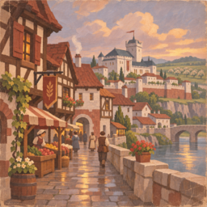
Highcourt, After the Rain
2 × 2 Blöcke · Decoration Merchant · 100 Silber
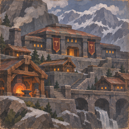
The Hearths of Dur Brannoc
2 × 2 Blöcke · Decoration Merchant · 100 Silber
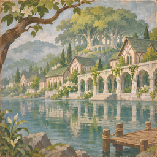
Lethariel by the Mere
2 × 2 Blöcke · Decoration Merchant · 100 Silber
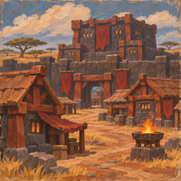
Gor Drazhak at Dusk
2 × 2 Blöcke · Decoration Merchant · 100 Silber
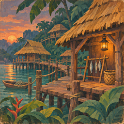
The Walkways of Kezamba
2 × 2 Blöcke · Decoration Merchant · 100 Silber
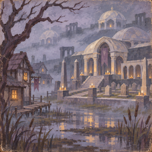
Candles of Nhal Veyr
2 × 2 Blöcke · Decoration Merchant · 100 Silber
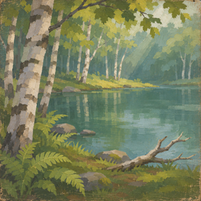
Silverwood Morning
1 × 1 Blöcke · Decoration Merchant · 50 Silber
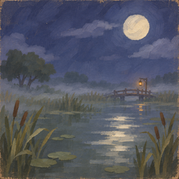
Lanterns over the Fen
1 × 1 Blöcke · Decoration Merchant · 50 Silber
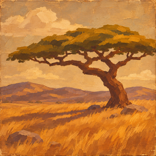
The Long Afternoon
1 × 1 Blöcke · Decoration Merchant · 50 Silber
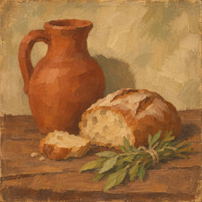
Bread, Herbs and Clay
1 × 1 Blöcke · Decoration Merchant · 50 Silber
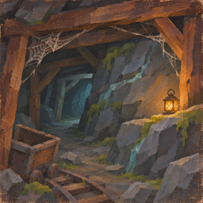
The Quiet Seam
2 × 2 Blöcke · Reward Chest: stilled_seam · 2%
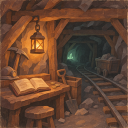
The Ledger Left Open
2 × 2 Blöcke · Reward Chest: second_shift · 2%
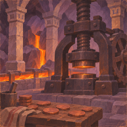
The Last Mint
2 × 2 Blöcke · Reward Chest: last_mint · 2%
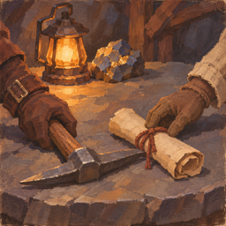
An Agreement in Stone
2 × 2 Blöcke · Decoration Merchant · 100 Silber
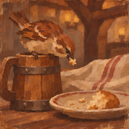
The Unpaid Guest
1 × 1 Blöcke · Decoration Merchant · 50 Silber
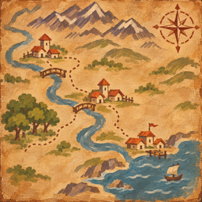
A Trader's Sketch
2 × 2 Blöcke · Decoration Merchant · 100 Silber